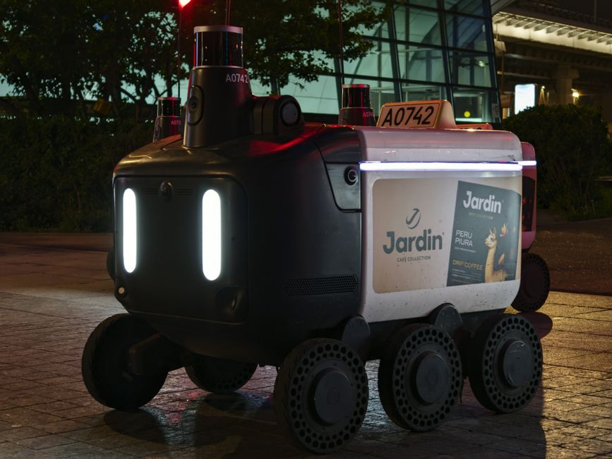

Imagine a world where small, nimble aircraft navigate complex environments, delivering packages, monitoring crops, or assisting in disaster relief – all without a human pilot at the controls. This isn't science fiction anymore! Welcome to the exciting realm of AI-powered drones, where the intelligence of artificial intelligence meets the agility of unmanned aerial vehicles (UAVs). These aren't just remote-controlled toys; they are sophisticated robots that can see, understand, and make decisions about the world around them. At MakerWorks, we believe in empowering the next generation of innovators, and understanding AI-powered drones is a fantastic way to dive into the future of robotics and aerial technology.
What Makes a Drone "Smart"? The Role of AI
A standard drone can fly, record video, and be controlled by a human. But an AI-powered drone goes a step further. It's equipped with the "brains" to process information, learn from its surroundings, and perform tasks autonomously. AI transforms a simple flying machine into an intelligent aerial robot.
Computer Vision: The Drone's Eyes
One of the most crucial aspects of AI in drones is computer vision. Just like our eyes help us understand our environment, computer vision allows drones to "see" and interpret visual data from their cameras. This involves:
- Object Detection: Identifying specific objects like people, vehicles, packages, or even specific types of crops.
- Object Tracking: Following a moving object or person.
- Environment Mapping: Creating 2D or 3D maps of an area to understand its layout and identify obstacles.
- Image Recognition: Classifying what an image contains (e.g., identifying if a plant is healthy or diseased).
Machine Learning & Deep Learning: The Drone's Brains
At the core of computer vision and other intelligent functions are machine learning (ML) and deep learning (DL) algorithms. These algorithms allow drones to:
- Learn from Data: By being trained on vast amounts of images and flight data, drones learn to recognize patterns and make predictions. For example, training a drone with thousands of images of healthy and diseased crops helps it identify plant health issues.
- Adapt and Improve: Over time, and with more data, the drone's AI can become even better at its tasks, adjusting to new environments and challenges.
- Make Decisions: Based on what it sees and has learned, the AI can decide on the best course of action, whether it's avoiding an obstacle, landing at a specific spot, or adjusting its flight path.
Path Planning & Navigation: The Drone's GPS and Route Planner
AI also plays a vital role in how drones navigate and plan their routes. Autonomous drones can:
- Sense and Avoid: Using sensors (like cameras, LiDAR, radar) and AI algorithms, drones can detect obstacles in real-time and automatically adjust their path to avoid collisions.
- Dynamic Route Optimization: Instead of following a pre-programmed path, AI can enable a drone to find the most efficient route, considering factors like weather, no-fly zones, and mission objectives.
- GPS-Denied Navigation: In environments where GPS signals are weak or unavailable (like indoors or dense urban areas), AI can use visual cues (visual odometry) to navigate and maintain its position.
AI-Powered Drones in Action: Real-World Applications
The applications of AI-powered drones are diverse and rapidly expanding, touching various sectors crucial to India's growth and development.
-
Agriculture (Agri-Drones):
Farmers can use AI drones to monitor crop health, detect pests, spray pesticides precisely, and assess irrigation needs. This leads to higher yields, reduced waste, and more sustainable farming practices. Imagine a drone flying over a field, identifying only the plants that need water or fertilizer, saving resources!
-
Logistics & Delivery:
Companies are exploring AI-powered delivery drones to transport packages, especially in remote or difficult-to-reach areas. These drones can autonomously navigate to a drop-off point, identify the correct location, and safely deliver goods, revolutionizing e-commerce and essential supply chains.
-
Surveillance & Security:
AI drones enhance security by autonomously patrolling large areas, detecting intruders, and monitoring events. Their ability to identify unusual activity or specific objects makes them invaluable for border security, critical infrastructure protection, and public safety.
-
Disaster Response & Search and Rescue:
In emergencies like floods or earthquakes, AI drones can rapidly map affected areas, identify survivors, and deliver emergency supplies. They can navigate dangerous terrains that are inaccessible to humans, providing critical information and aid.
-
Infrastructure Inspection:
Inspecting vast structures like bridges, power lines, wind turbines, and pipelines can be dangerous and time-consuming for humans. AI drones can autonomously fly along these structures, detect cracks, corrosion, or damage using computer vision, and report findings with high accuracy, ensuring safety and reducing maintenance costs.
"The true power of AI in drones isn't just about automation; it's about augmenting human capabilities, allowing us to achieve tasks with greater safety, efficiency, and precision than ever before."
— A MakerWorks Educator
Building Your Own AI Drone: A Glimpse into the Future (and Present!)
The exciting news is that you don't need to be a rocket scientist to start exploring AI drones! Many hobbyist and educational platforms allow you to experiment with these technologies.
Key components for an AI drone typically include:
- Drone Platform: A basic quadcopter or multirotor frame.
- Flight Controller: The "brain" that manages flight stability (e.g., Pixhawk, ArduPilot).
- Onboard Computer: A powerful mini-computer like a Raspberry Pi or NVIDIA Jetson that runs the AI algorithms.
- Camera: For capturing visual data for computer vision.
- Sensors: GPS, IMU (Inertial Measurement Unit), LiDAR, ultrasonic sensors for navigation and obstacle detection.
- AI Software: Libraries and frameworks like OpenCV, TensorFlow, PyTorch for developing and deploying AI models.
A Simple AI Concept: Object Detection
Let's look at a conceptual Python code snippet that illustrates how an AI drone might use object detection to make a decision. Imagine this running on the drone's onboard computer, constantly analyzing the camera feed:
# Conceptual Python code for an AI drone's object detection task
# Imagine this running on a drone's onboard computer!
def process_camera_feed(image_frame_data):
"""
Simulates an AI model analyzing image data for specific objects.
In a real system, 'image_frame_data' would be actual pixels
and the detection would involve complex neural networks.
"""
print("AI analyzing image frame...")
# For simplicity, let's simulate detection based on a conceptual 'tag'
# In reality, a pre-trained AI model (e.g., for delivery packages)
# would process the image pixels to find objects.
if "delivery_package_identified" in image_frame_data:
package_coords = image_frame_data["package_location"]
print(f" AI detected a delivery package at: {package_coords}")
return {"object_found": True, "type": "delivery_package", "location": package_coords}
elif "obstacle_detected" in image_frame_data:
obstacle_type = image_frame_data["obstacle_details"]
print(f" AI detected an obstacle: {obstacle_type}")
return {"object_found": True, "type": "obstacle", "details": obstacle_type}
else:
print(" No specific objects or obstacles detected.")
return {"object_found": False}
# --- How a drone might use this AI function in its flight loop ---
# Imagine 'current_camera_feed' is constantly updated by the drone's camera.
# Example 1: Drone detects a package
print("\n--- Drone AI Simulation: Scenario 1 (Package Delivery) ---")
dummy_frame_with_package = {
"pixels": "...", # Actual image pixel data
"delivery_package_identified": True,
"package_location": (100, 250, 50, 50) # x, y, width, height bounding box
}
detection_result = process_camera_feed(dummy_frame_with_package)
if detection_result["object_found"] and detection_result["type"] == "delivery_package":
print(" Drone command: Initiating package drop-off sequence at target location!")
# Example 2: Drone encounters an obstacle
print("\n--- Drone AI Simulation: Scenario 2 (Obstacle Avoidance) ---")
dummy_frame_with_obstacle = {
"pixels": "...",
"obstacle_detected": True,
"obstacle_details": "Tree branch ahead"
}
detection_result = process_camera_feed(dummy_frame_with_obstacle)
if detection_result["object_found"] and detection_result["type"] == "obstacle":
print(f" Drone command: Rerouting to avoid {detection_result['details']}!")
# Example 3: Nothing special detected
print("\n--- Drone AI Simulation: Scenario 3 (Routine Flight) ---")
dummy_frame_empty = {"pixels": "..."}
detection_result = process_camera_feed(dummy_frame_empty)
if not detection_result["object_found"]:
print(" Drone command: Continuing along planned flight path.")
This simple example shows how the AI's "vision" (process_camera_feed) leads to a "decision" (drone command). Real-world AI models are far more complex, but the core principle of observing, processing, and acting remains the same.
Challenges and the Road Ahead
While AI-powered drones are incredibly promising, they also face challenges. These include:
- Regulatory Hurdles: Establishing clear laws for autonomous drone operation, especially in crowded airspaces.
- Battery Life: Extending flight times to cover larger areas or deliver heavier payloads.
- Computational Power: Miniaturizing powerful AI processing units to fit on small drones while remaining energy-efficient.
- Ethical Concerns: Addressing privacy issues related to surveillance and ensuring responsible use of autonomous technology.
- Robustness of AI: Ensuring AI models perform reliably in diverse, unpredictable real-world conditions (e.g., varying light, weather, unexpected objects).
Researchers and engineers globally, including many innovators in India, are actively working to overcome these challenges, pushing the boundaries of what AI drones can achieve.
Conclusion: Soaring into a Smarter Future
AI-powered drones are not just gadgets; they are intelligent aerial robots poised to transform industries, improve lives, and open up entirely new possibilities. From revolutionizing agriculture to speeding up deliveries and enhancing safety, their impact will be profound. For students and enthusiasts in India, this field offers an incredible opportunity to combine creativity with cutting-edge technology.
At MakerWorks, we believe that understanding these technologies is the first step towards innovating with them. If you're fascinated by the idea of building intelligent machines that fly, navigate, and make decisions, then the world of AI-powered drones is waiting for you. Dive in, learn, experiment, and who knows, you might be the one to develop the next breakthrough in aerial robotics!
Ready to take your first flight into robotics and AI? Explore our courses and workshops at MakerWorks today!